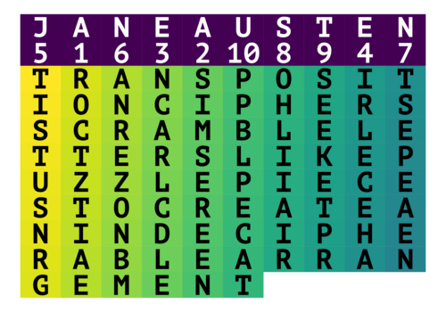
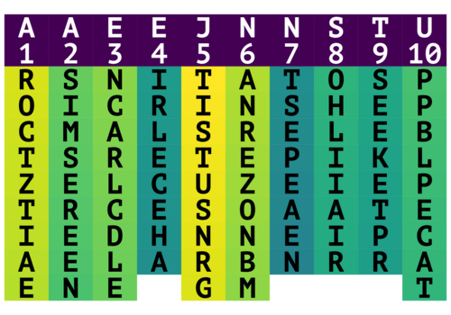

The transposition cipher is a method of encrypting
a message that uses a key of letters to rearrange the order of characters in the plaintext by columns.
The transposition cipher works by taking the key given and arranging the letters of the message under the key in rows as long as the key's letter length.
Then the letters from the key word are rearranged into alphabetical order, and finally the ciphertext is created
by taking the letters in the columns under the key word in the order of the rearranged key word.

A transposition cipher with the keyword Janeausten

Once the columns are rearranged in alphabetical order, the ciphertext is created by reading down the columns from left to right.